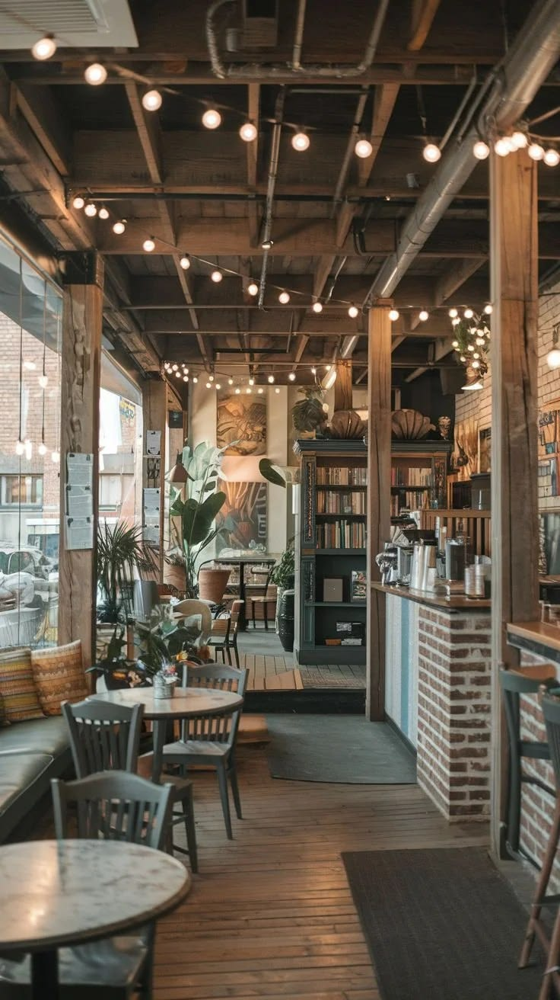

Our Story
Brewing community, comfort, and exceptional coffee since 2024.
How We Started
Cozy Corner Cafe began with a simple idea: to create a warm, welcoming space where people could slow down, connect, and enjoy a truly great cup of coffee. What started as a passion project in a small kitchen has grown into a neighborhood staple.
We source our beans ethically from sustainable farms around the world and roast them locally to bring out the unique flavors of every single batch. Whether you are here to work, catch up with an old friend, or simply enjoy a quiet morning, we have a seat saved for you.

Our Values Are
Quality ingrediants
From organic milk to premium single-origin beans, we never compromise on what goes into your cup.
Community First
We believe a cafe should be the heart of its neighborhood. We proudly support local artists and events.
Sustainability
We strive to minimize our environmental footprint by using biodegradable packaging and reducing waste.